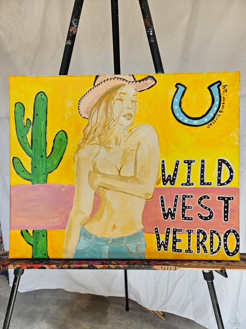
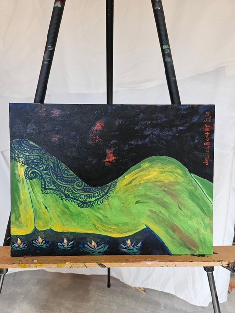
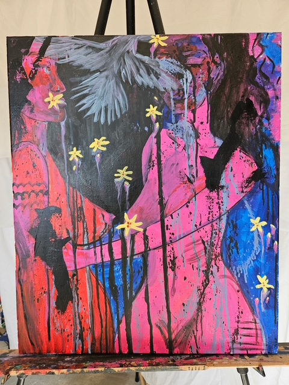
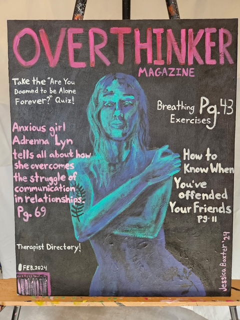
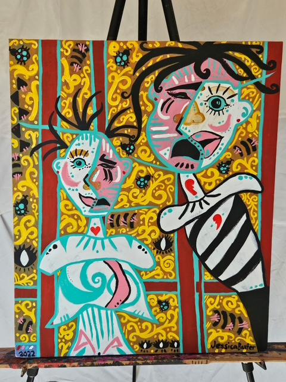
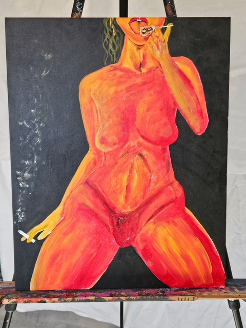

Last year Jessica made this piece of art. A cowgirl in a desert background.

Painting of a woman laying in the dark next to some pretty flower candles.

Jessica created this colorful painting of a couple. One of the woman is holding the other with one hand at the waist.

This is a painting of a magazine cover with an interesting spin on the topics.

Some more of Jessica's impressive abstract painting with split faces and pretty colors.

Jessica's artwork here depicts a woman smoking a cigarette and licking a lollipop with a scorpion inside.